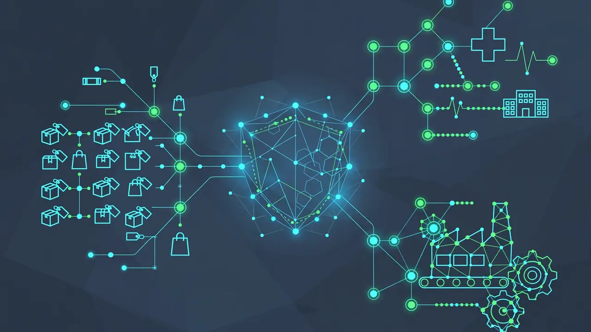

Cognizant and Google Cloud launch a Gemini Frontier Capability Group: 18,000 engineers to take agentic AI from pilot to production
- Who: Cognizant (Nasdaq: CTSH) and Google Cloud.
- What: A new Gemini Frontier Capability Group dedicated to deploying production-grade AI agents on Gemini for global enterprises.
- When: announced October 19, 2026, via PR Newswire.
- Scale: more than 18,000 dedicated Cognizant associates; 55,000 completed the Build with Gemini workshop, the largest single Gemini partner workshop to date.
- Architecture: standardized, security-first agentic architecture built on the Model Context Protocol (MCP), fortified by Google Cloud Model Armor.
- Proof points (company-reported): a leading retailer saw 40% higher developer productivity, 30% faster time-to-market and 35% cost savings; Gemini is rolling out internally to 100,000 associates in 2026, scaling to 200,000.
TEANECK, N.J. — Cognizant and Google Cloud announced on October 19, 2026 a significant expansion of their partnership, anchored by a new Gemini Frontier Capability Group: a dedicated global workforce, backed by more than 18,000 Cognizant associates, whose sole brief is to move agentic AI from pilot projects into production inside large enterprises.
The announcement, issued via PR Newswire from Teaneck, New Jersey and Sunnyvale, California, frames the group as a substantial joint investment. It pairs Google's full-stack, enterprise-ready AI platform — the Gemini models and the surrounding agent-building stack — with Cognizant's domain, industry and engineering expertise. The companies describe the unit as "designed to bridge the path from pilot to production," equipping enterprises with the ability to safely deploy resilient, enterprise-grade agents that deliver measurable business value.
A bid for the enterprise agent bottleneck
The timing is deliberate. Enterprises across industries are sitting on a growing gap between AI ambition and AI delivery: agents work in demos and hackathons, then stall on security reviews, integration complexity and the sheer unglamorous work of connecting them to real systems. Cognizant and Google Cloud are betting that a purpose-built delivery organization — thousands of engineers certified on one platform, with a standardized architecture — is the way to close that gap.
"Establishing our dedicated Gemini Frontier Capability Group lets our best frontier engineering talent focus entirely on getting frontier AI into production for clients," said Ravi Kumar S, CEO of Cognizant. He added that the company's Build with Gemini workshop gave more than 55,000 associates hands-on experience on the platform, "and this new group is where that experience goes to work every day."
Thomas Kurian, CEO of Google Cloud, said that "deploying AI agents at scale requires trusted partners with deep architectural and integration expertise," and that Cognizant's dedicated group and its skilling push "will help our joint customers accelerate the adoption of autonomous agents throughout the enterprise."
What the group will actually build
The announcement names four initial engineering focus areas: legacy modernization, developer experience, autonomous business process agentification and frontier cyber defense. To operationalize them, the group plans to deploy a standardized, security-first agentic architecture built on the Model Context Protocol (MCP) and fortified by Google Cloud's Model Armor.
Three product directions are already named as expected outputs of that architecture:
- Catalog Support Agent for retail — a collaborative, production-ready agent for retail operations;
- a Healthcare Agentic Marketplace orchestrated by Cognizant's Neuro San platform; and
- multi-agent Order-to-Cash workflows for manufacturing.

The people numbers behind the pitch
The headline figures are about headcount and training scale, not model benchmarks. More than 55,000 Cognizant associates have completed the company's Build with Gemini workshop with Google Cloud — described as the largest single Gemini partner workshop held to date — building AI agents and applications while earning Gemini skills credentials. The workshop sits inside a shared commitment to scale client execution through what the companies call Frontier Certified Engineers.
Cognizant is also applying Gemini internally at scale: the company is deploying Gemini to 100,000 associates in 2026, with plans to scale up to 200,000, and says it continues to increase its certification commitment for professionals on the platform.
As an early proof point, the companies say that by integrating Gemini AI models across a leading retailer's software development lifecycle, Cognizant helped the retailer achieve a 40% increase in developer productivity, a 30% reduction in time-to-market and 35% cost savings. Those numbers are company-reported for a single client engagement — a useful illustration of the model working, not a guarantee of what every deployment will deliver.
Not the first move — the third
Today's announcement is the third major step in the alliance this year. On April 22, 2026, Cognizant announced a dedicated Gemini Enterprise Practice in collaboration with Google Cloud, with Google Cloud designating Cognizant a Diamond partner — the highest tier in its partner program — and Cognizant promising forward-deployed engineers embedded inside client environments.
On July 7, 2026, the companies announced a further expansion covering Cognizant's internal deployment of Gemini Enterprise and Google Workspace across its global organization, describing the Frontier Certified Engineer delivery model, a certification target of at least 10,000 professionals on the platform, and an Agent Foundry that had built more than 2,000 agents to date.
The pattern is clear: first the practice, then the internal deployment, and now the dedicated delivery unit. Whether 18,000 engineers can turn "agentic AI" from a slide-deck promise into production systems is the test this group will be measured against. Today's announcement gives the partnership the organizational machinery to try at scale.
Frequently asked questions
What is the Gemini Frontier Capability Group?
A dedicated global workforce created by Cognizant and Google Cloud, backed by more than 18,000 Cognizant associates, designed to bridge the path from pilot to production — deploying resilient, enterprise-grade AI agents built on Gemini that deliver measurable business value.
What will the group build first?
Its initial engineering focus covers legacy modernization, developer experience, autonomous business process agentification and frontier cyber defense, on a standardized, security-first agentic architecture built on the Model Context Protocol (MCP) and fortified by Google Cloud Model Armor. Named planned solutions include a Catalog Support Agent for retail, a Neuro San-orchestrated Healthcare Agentic Marketplace, and multi-agent Order-to-Cash workflows for manufacturing.
How many people has Cognizant trained on Gemini?
More than 55,000 associates completed the Build with Gemini workshop with Google Cloud — the largest single Gemini partner workshop held to date. Separately, Cognizant is deploying Gemini internally to 100,000 associates in 2026, with plans to scale up to 200,000.